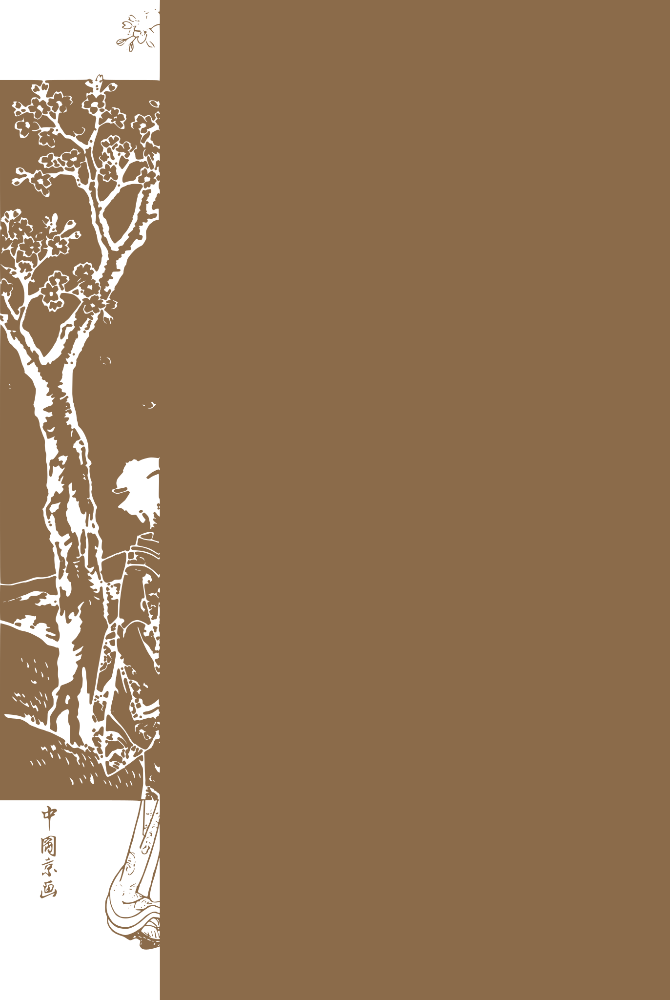

錦絵 (Nishiki-e) - 7色版
墨 #1C1C1C
藍 #3D5A73
紅 #B85B5B
草 #7A8B5A
茶 #8B6B4A
黄 #D4B87A
薄墨 #9A9A9A
個別レイヤー

Layer 1: 墨版
Layer 2: 藍版（空・富士山）
Layer 3: 紅版（桜の花）
Layer 4: 草版（風景）

Layer 5: 茶版（木の幹）
Layer 6: 黄版（着物）
Layer 7: 薄墨版（富士山・雲）